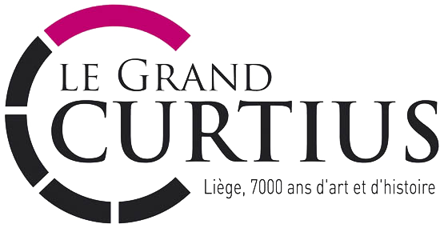

Comment ça marche ?
C'est facile !
Etape 1
Placez-vous sous une source lumineuse.
Etape 2
Lorsque vous êtes devant une borne
elle vous localise et affiche automatiquement
sur votre tablette les informations sur l'oeuvre
qui est devant vous.
Suivant